开心果 Need Car · 2023-04-28T13:33:00+08:00 · 微信原文
前文讨论过，网络唤醒，有时需要两帧网络管理报文，可以参考前文《Autosar网络管理：为什么需要2帧网络管理报文唤醒网络？》，前文给出的观点：第一帧网络管理报文需要唤醒SBC，第二帧网络管理报文才能真正唤醒网络。此表述要结合产品PCB设计及软件处理策略，并不绝对。本文针对该问题再次展开讨论。本文从CAN Transceiver角度，讨论如下几个问题：
TJA1145与CAN Transceiver关系
为什么需要两帧网络管理报文唤醒？
第一帧网络管理报文到底在唤醒谁？
1、TJA1145与CAN Transceiver关系
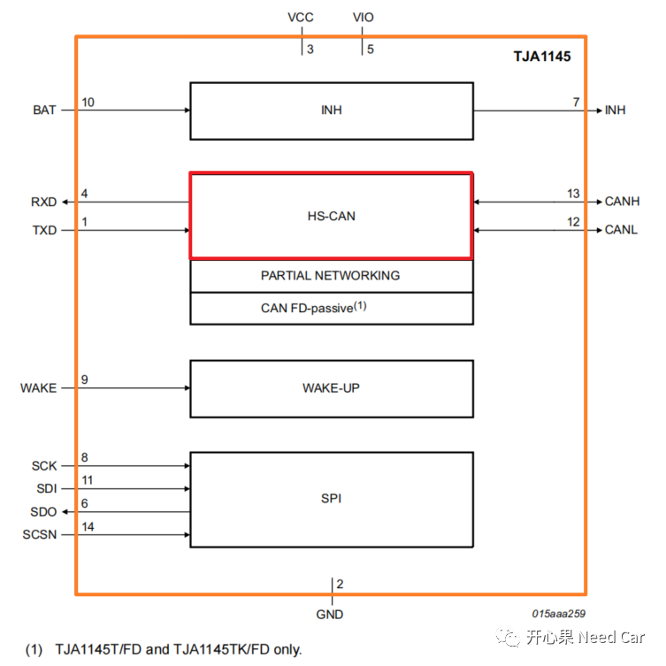
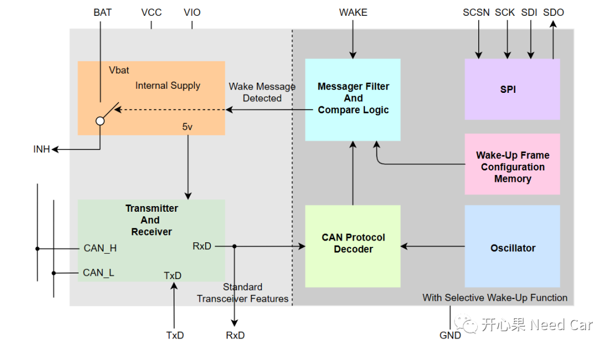
HS-CAN≠TJA1145，所以，两者的状态机就不能混为一谈。
（一）TJA1145状态模式
TJA1145对应的模式包括Normal、Standby、Sleep、Overtemp 以及 Off五种模式，如下所示：
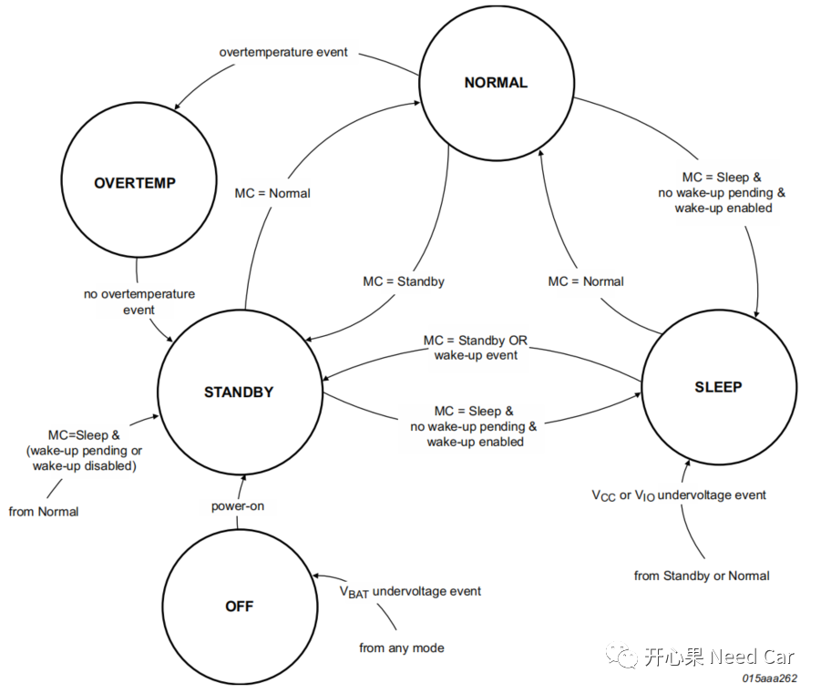
（二）HS-CAN状态模式
HS-CAN状态包括：Active、 Listen-only、Offline、Offline Bias、Off五种模式，如下所示：
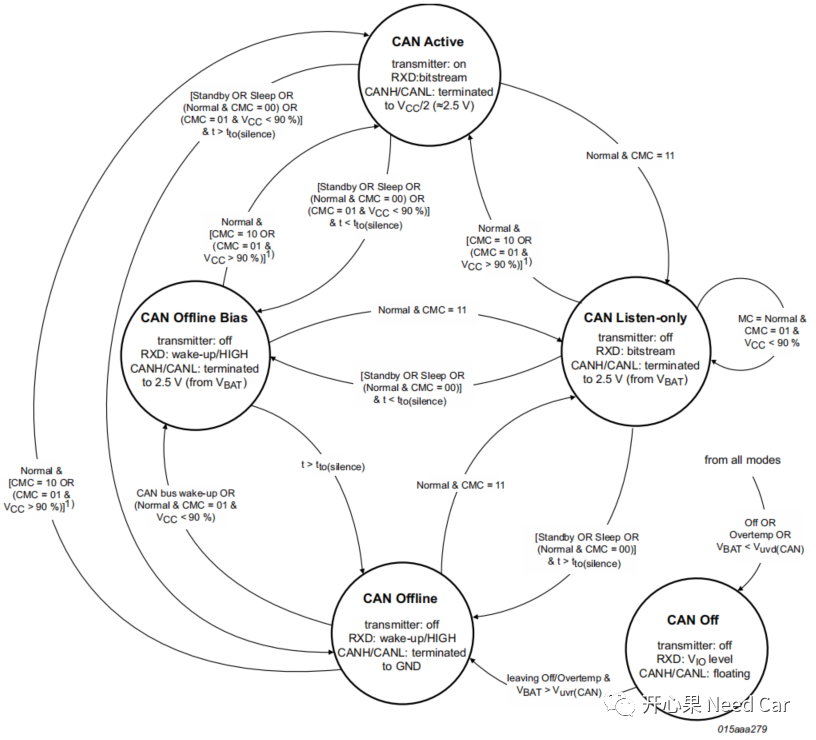
2、两帧网络管理报文唤醒网络的原因
两帧网络管理报文就一定能唤醒网络吗？答：不一定。为什么不一定呢？这要看两帧报文的发送间隔。这里做一个测试，在CANoe中打开Tx Self-ACK选项，分两种工况发送网络管理报文，测试网络的唤醒情况。
（一）＞1s的间隔发送多次网络管理报文（本文：0x52C）
当两帧网络管理报文的间隔＞1s时，不管发送多少帧有效的网络管理报文，均不能唤醒网络，如下所示：
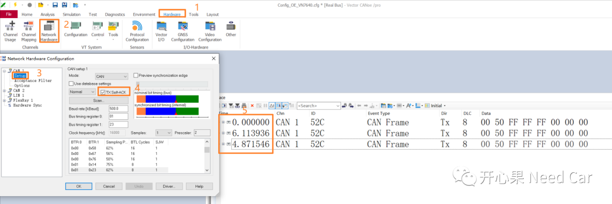
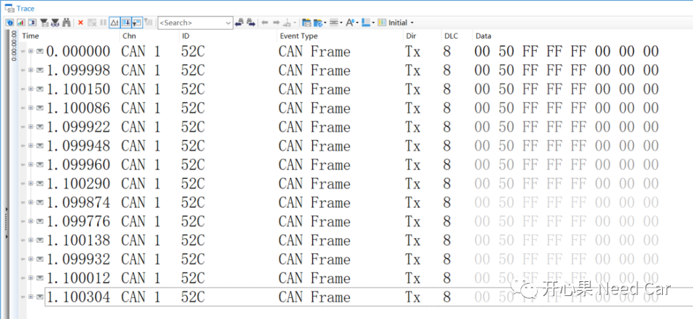
（二）＜1s的间隔发送多次网络管理报文（本文：0x52C）
当两帧网络管理报文的间隔＜1s时，网络管理报文可以唤醒网络，如下所示：
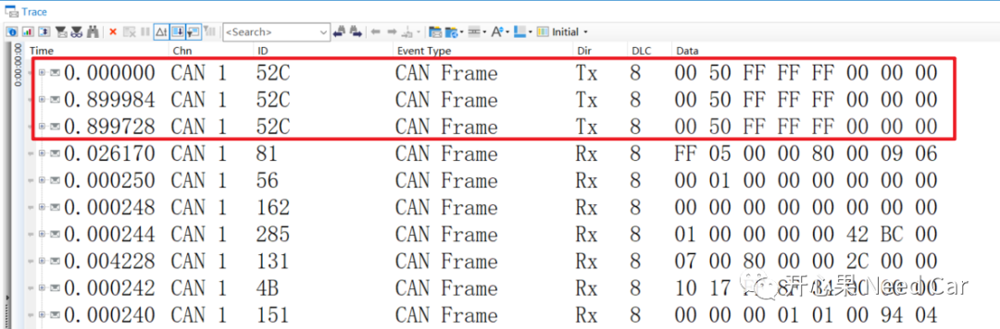
如上的测试可以看出：当网络管理报文的间隔＞1s时，网络无法唤醒，当两帧网络管理报文的间隔＜1s时，网络可以唤醒。也就是说，网络唤醒不仅与网络管理报文的次数有关，还与网络管理报文发送的间隔有关。
（三）网络管理报文次数对网络唤醒的作用
网络的唤醒，为什么需要≥2帧网络管理报文呢？换一个思考方向：第一帧网络管理报文的作用是什么？是唤醒SBC吗？答：先说答案，这里的第一帧网络管理报文不是唤醒SBC，而是激活Bus Bias和CAN Decoder，解释如下：
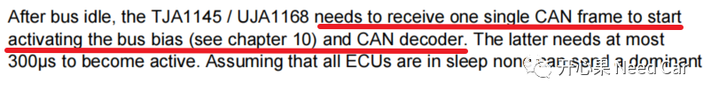
（1）激活Bus Bias
当TJA1145休眠以后，CAN_H与CAN_L没有电平，也就是0V，而HS-CAN空闲状态下，CAN_H与CAN_L均为2.5V，所以，CAN_H、CAN_L电压偏置2.5V就是激活Bus Bias，示意如下：
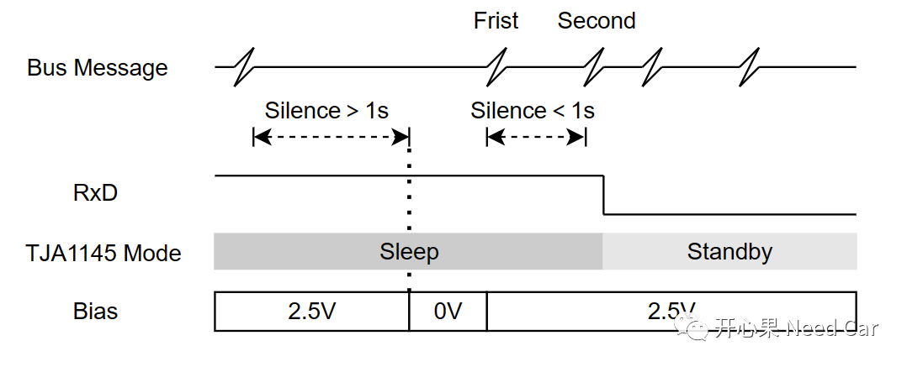
（2）激活CAN Decoder
（四）网络管理报文间隔对网络唤醒的影响
本文最开始，澄清了TJA1145与HS-CAN的关系，两者是不同的概念，对应不同的状态机。HS-CAN的主要作用：转换数字信号和模拟信号。更具体说：HS-CAN在Active Mode下，通过发送器(transmitter)将CAN Controller要发送的数字信号转换成模拟信号（CAN_H、CAN_L之间形成压差）；通过接收器（receiver）将总线接收到的模拟信号转化成数字信号，通过RxD传输给CAN Controller。具体解释如下所示：
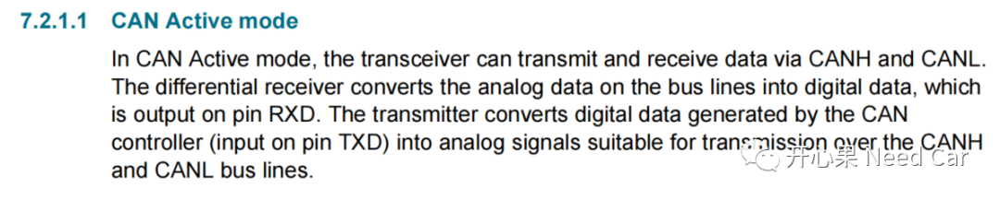
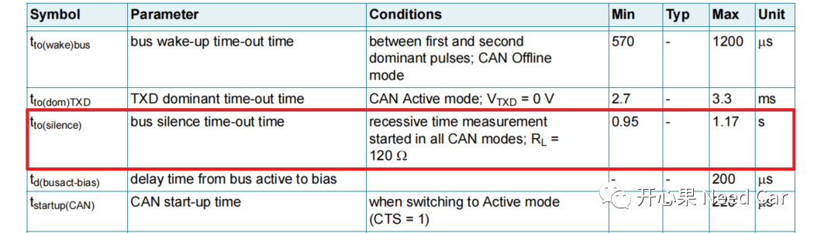
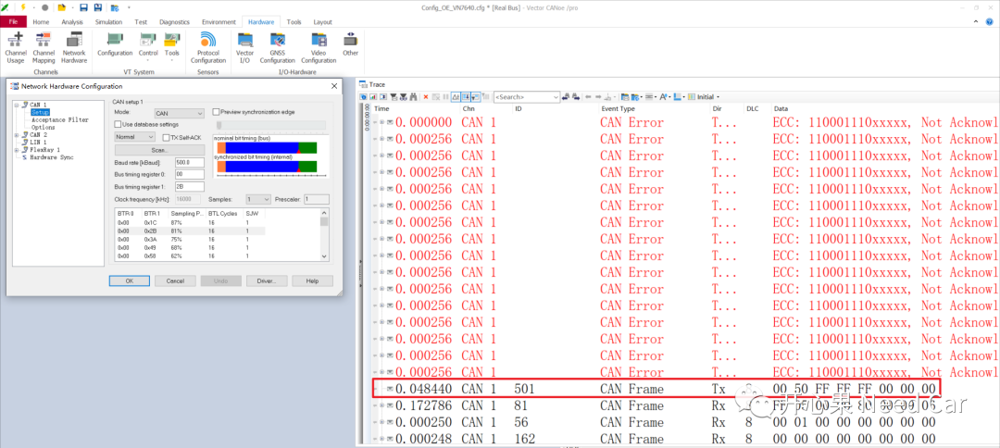
如上图，为什么一帧网络管理报文就能唤醒网络呢？不是至少需要两帧吗？如上可以看出，在CANoe模拟发送的网络管理报文（0x501）被应答之前，总线上有大量的错误帧，错误类型为Not Acknowledge error（NAck）。如果总线出现NAck错误，说明发送节点发送的报文，没有节点应答。但是，发送节点已经将这帧报文传发送到了总线上，所以，这里的错误帧一样起到了激活Bus Bias和CAN Decoder的作用，同时被识别为有效的唤醒事件，因为此报文是有效的网络管理报文，只是应答槽位没有被应答，但是TJA1145已将应答槽之前的部分接收并识别。当uC完成初始化，CAN Controller正常工作以后，即可正常接收报文，进而应答报文。
之所以总线上出现多次错误帧，是因为CANoe的重发机制。
如果错误帧都能激活Bus Bias和CAN Decoder，是不是任意一帧报文均能做到？答：个人理解，是的。打开Tx Self-ACK，测试如下所示（打开Tx Self-ACK)：
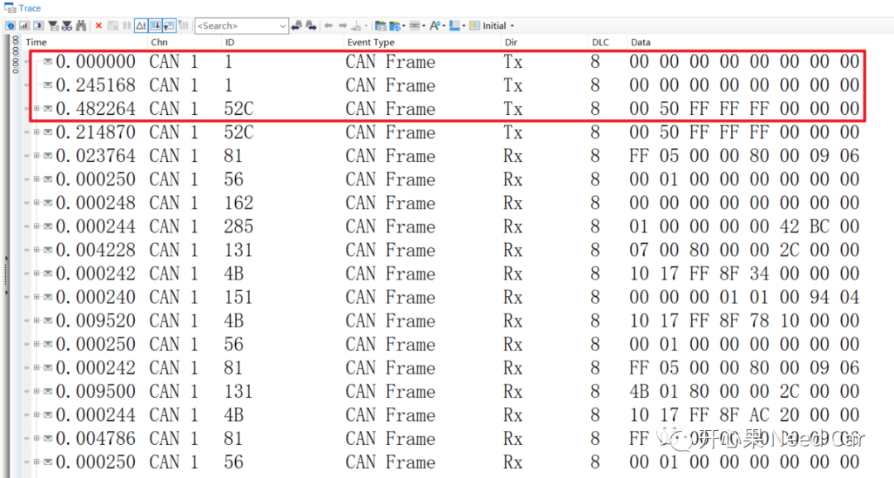
往期精彩回顾
Bootloader开发：为什么需要SBL（Secondary Bootloader）?
Autosar EcuM：APP由RUN到POST_RUN浅析